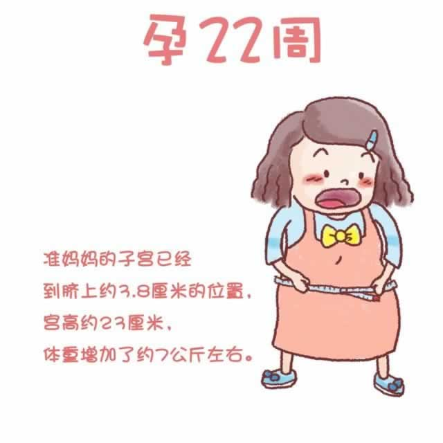

最近，你的脚和脚踝可能会出现肿胀。这是由于不断长大的宝宝压迫腹股沟的大动脉，腿部血管压力增大而造成的。一般来说浮肿的现象在晚上要比早上严重。适量做一些运动，可以促进血液循环。在躺下时采取左侧卧位，将脚垫高些，也可以有效缓解浮肿。
正常的浮肿通常只出现在脚和脚踝处。如果浮肿发展到小腿处，且按下去会出现凹陷。或者脸部、眼睛周围以及手部都出现浮肿，则需要马上去看医生，因为这可能是一种叫做“先兆子痫”的严重疾病的征兆。
除了浮肿，在孕早期曾经困扰过你的胃部不适，最近又出现了。这是由于膨胀的子宫开始压迫腹部器官，胃的容量减少，导致整个消化系统的功能减弱造成的。通常表现为消化不良，胃部隐痛，采取少吃多餐的方式，在饭前或睡前喝一杯酸奶，会有助于胃肠蠕动。